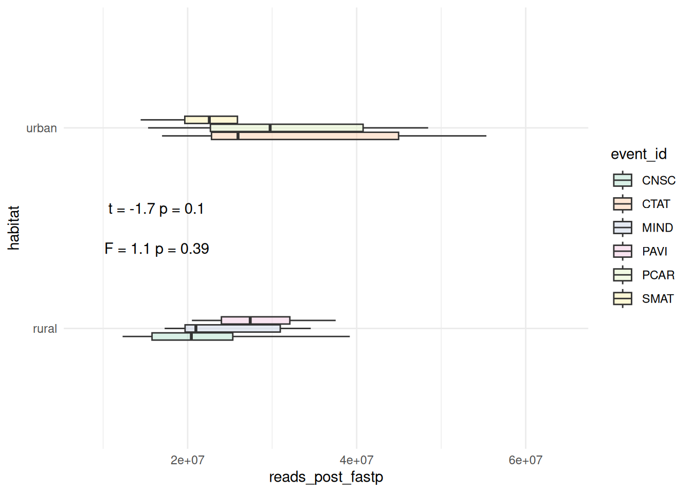
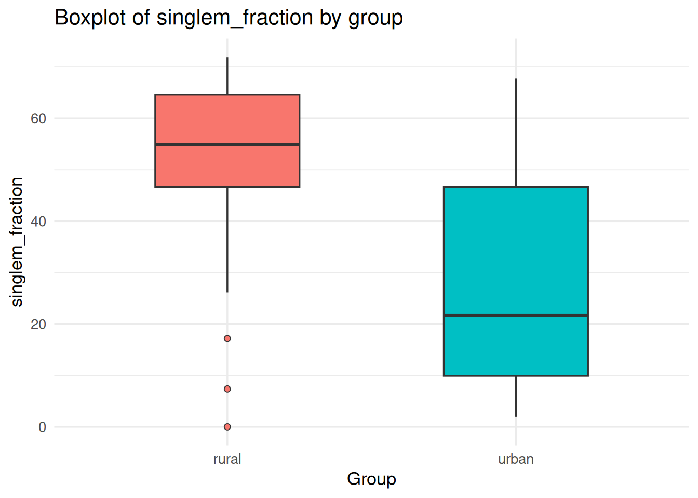
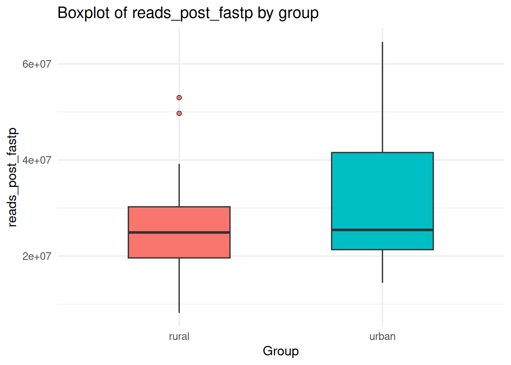
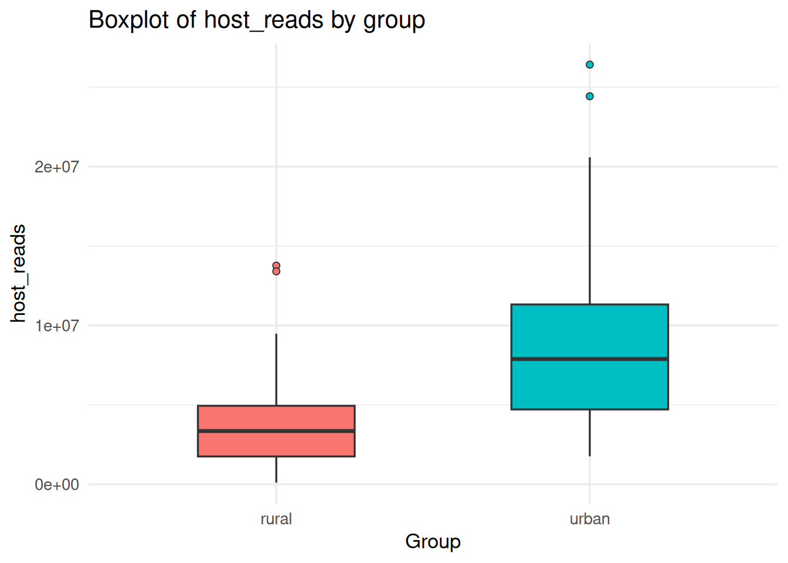
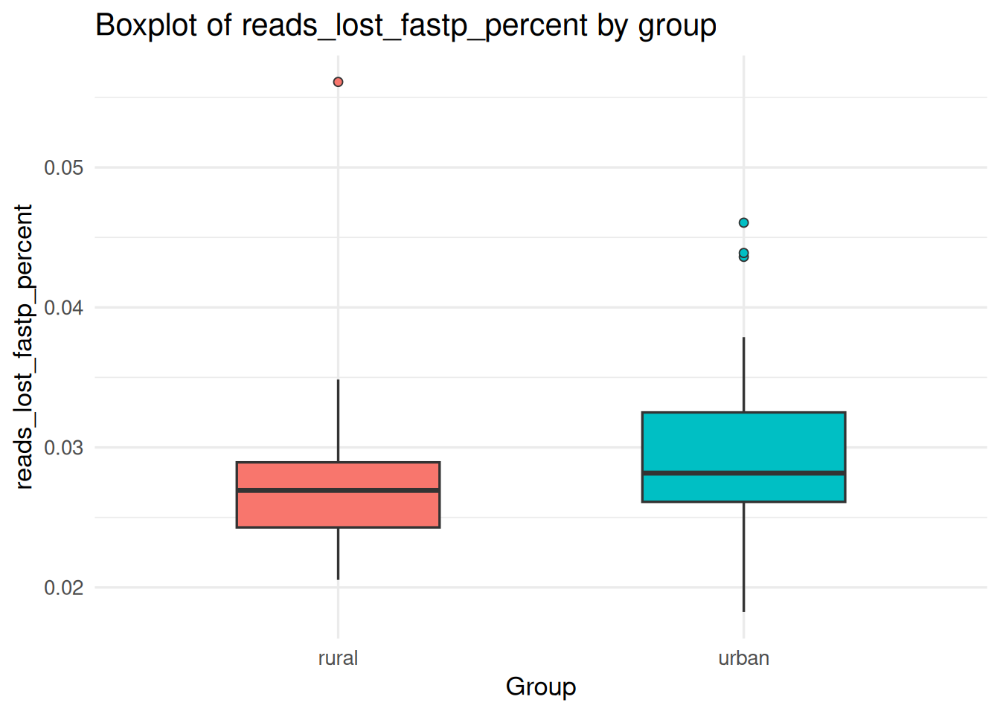
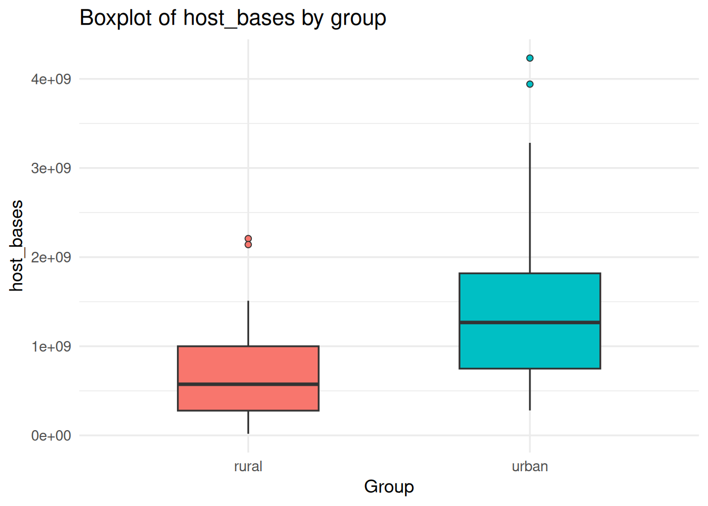
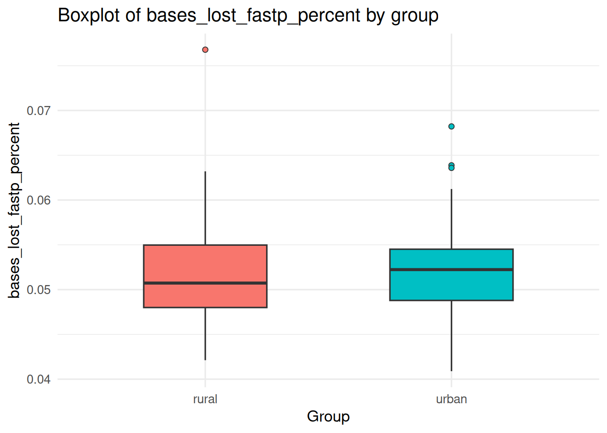

3 Prepare data
Load packages
pkgs = readRDS("data/Rpkgs.Rds")
install.packages(setdiff(pkgs, rownames(installed.packages())))
lapply(pkgs, require, character.only = TRUE)3.2 Load data
Load the original data files outputted by the bioinformatic pipeline.
[1] "dirData" "dirMain" "genome_counts"
[4] "genome_counts_filt" "genome_gifts_raw" "genome_metadata"
[7] "genome_tree" "phylum_colors" "physeq_genome"
[10] "physeq_genome_clr" "pkgs" "read_counts"
[13] "sample_metadata" "sample_metadata3" 3.2.1 Sample metadata
Load the metadata file from EHI.
Additional metadata information about the types of samples and which habitat they are ascribed to.
# sample notes
added_metadata = read.csv("data/EHI_sample_metadata.csv")
# join metadata data frames
added_metadata = merge.data.frame(sample_metadata,added_metadata,
by.x = "sample_code", by.y = "tube_code",all.x = T)
# clarify swab type
added_metadata = added_metadata %>%
mutate(swab = ifelse(grepl("EHI", note),
"EHI",
"CTM"))
# clarify buffer solution
added_metadata = added_metadata %>%
mutate(sol = ifelse(grepl("ETOH", note),
"ETOH",
"PBS"))
# define sites as either urban or rual
urban_sites = c("CTAT","SMAT","PCAR")
added_metadata = added_metadata %>%
mutate(habitat = ifelse(grepl(paste(urban_sites, collapse="|"), event_id),
"urban",
"rural"))
sample_metadata = added_metadataPrepare a secondary metadata data frame to compare replicates.
sample_metadata2 = readxl::read_xlsx("data/EHI_electronic_metadata_V3.xlsx",
"Metadata B2 (Samples)",
skip = 10,
col_names =
c("n","sample_code",
"animal_id","event_id",
"sample_type","sample_origin",
"freshness","freeze_time",
"notes"))
# correct sample codes names
sample_metadata2[grep("ETOH",sample_metadata2$sample_code),]$sample_code =
c("AKD59","AKD60",NA,"AKD62","AKD63")
sample_metadata2 =
sample_metadata2 %>%
full_join(sample_metadata, by = "sample_code") %>%
select(!ends_with(".y")) %>%
filter(sample_type.x == "Skin swab") %>%
filter(!is.na(sample))3.2.2 Add environmental variables
Include details about mean impervious surface within 200m of sites.
# read impervious surface
gis_data =
read.csv("data/EHI_site_metadata_QGIS.csv") %>%
rename_with(~ sapply(strsplit(.x, "\\."), `[`, 1)) %>%
select(Sampling,X_IMDmean)
sample_metadata =
merge(
sample_metadata,
gis_data,
by.x = "event_id", by.y = "Sampling")3.2.2.1 [[OPTIONAL]] Remove ethanol preserved samples from further consideration
Exclude samples preserved in ethanol as part of our initial buffer trial. The output the total number of reads from the READ_COUNTS summary excluding samples that were not included in subsequent analyses.
sample_metadata2 =
sample_metadata %>%
filter(sol == "PBS") %>% # include only samples with PBS buffer
filter(sex == "Male") # exclude females included by accident
# summarize total reads among samples plus mean and median per sample
print(paste0(
signif(sum(read_counts[,sample_metadata2$sample]) / 1e6, 3),"M total reads (mean = ",
signif(mean(colSums(read_counts[,sample_metadata2$sample]) / 1e6), 3),"M ± ",
signif(sd(colSums(read_counts[,sample_metadata2$sample]) / 1e6), 3),"M, median = ",
signif(median(colSums(read_counts[,sample_metadata2$sample]) / 1e6), 3), "M reads per sample)"
))[1] "101M total reads (mean = 1.74M ± 2.76M, median = 1.07M reads per sample)"3.2.3 Visualize Metadata
sex
region Male
Porto 58# number of samples from each site
ggplot(sample_metadata2, aes(x = habitat, y = reads_post_fastp, fill = event_id)) +
geom_boxplot(width = 0.12, outlier.color = NA, alpha = 0.5) +
theme_minimal() +
scale_fill_brewer(palette = "Pastel2") +
coord_flip() +
annotate("text",
x=1.4,
y=2*min(sample_metadata2$reads_post_fastp),
label=paste(
"F =",signif(oneway.test(reads_post_fastp ~ event_id, data = sample_metadata2, var.equal = TRUE)$statistic,2),
"p =",signif(oneway.test(reads_post_fastp ~ event_id, data = sample_metadata2, var.equal = TRUE)$p.value,2)
)) +
annotate("text",
x=1.6,
y=2*min(sample_metadata2$reads_post_fastp),
label=paste(
"t =",signif(t.test(reads_post_fastp ~ habitat, data = sample_metadata2)$statistic,2),
"p =",signif(t.test(reads_post_fastp ~ habitat, data = sample_metadata2)$p.value,2)
))
Use a reverse calculation to determine the total number of pre-fastp reads per sample.N = sample_metadata2$reads_post_fastp # reads post fastp
P = 1 - sample_metadata2$reads_lost_fastp_percent # proportion reads post fastp
print(paste0(
signif(sum(N / (P/100)) / 1e6, 3),"M total reads (mean = ",
signif(mean(N / (P/100)) / 1e6, 3),"M ± ",
signif(sd(N / (P/100)) / 1e6, 3),"M, median = ",
signif(median(N / (P/100)) / 1e6, 3), "M reads per sample)"
))[1] "170000M total reads (mean = 2940M ± 1280M, median = 2580M reads per sample)"3.2.4 Filter Table
sample_metadata2 %>%
select(animal_id,habitat,
singlem_fraction,reads_post_fastp,host_reads,reads_lost_fastp_percent,
host_bases,bases_lost_fastp_percent) %>%
group_by(habitat) %>%
summarise(across(singlem_fraction:reads_lost_fastp_percent,
list(mean = mean, sd = sd),
.names = "{.col}_{.fn}")) %>%
t() [,1] [,2]
habitat "rural" "urban"
singlem_fraction_mean "50.47567" "28.58821"
singlem_fraction_sd "18.30102" "21.28080"
reads_post_fastp_mean "25875938" "31278090"
reads_post_fastp_sd "10048166" "14052552"
host_reads_mean "4345564" "9822994"
host_reads_sd "3683833" "6862186"
reads_lost_fastp_percent_mean "0.02777256" "0.03011154"
reads_lost_fastp_percent_sd "0.006347456" "0.006622514"vars <- c("singlem_fraction","reads_post_fastp",
"host_reads","reads_lost_fastp_percent",
"host_bases","bases_lost_fastp_percent")
# Loop to create and save one boxplot per column
for (v in vars) {
p <-
ggplot(
sample_metadata2 %>%
select(animal_id,habitat,
singlem_fraction,reads_post_fastp,host_reads,reads_lost_fastp_percent,
host_bases,bases_lost_fastp_percent)
, aes(x = habitat, y = .data[[v]], fill = habitat)) +
geom_boxplot(width = 0.5, outlier.shape = 21) +
labs(title = paste("Boxplot of", v, "by group"),
x = "Group", y = v) +
theme_minimal(base_size = 13) +
theme(legend.position = "none")
print(p) # display in RStudio / viewer
}





3.2.5 Read counts
read_counts <- read_tsv("data/DMB0177_counts.tsv.gz") %>%
rename(genome=1) %>%
select(one_of(c("genome",sample_metadata$sample)))
head(read_counts)# A tibble: 6 × 65
genome EHI03126 EHI03162 EHI03159 EHI03146 EHI03144 EHI03160 EHI03150 EHI03161
<chr> <dbl> <dbl> <dbl> <dbl> <dbl> <dbl> <dbl> <dbl>
1 EHA05… 2 0 8 4 1 29313 2 2
2 EHA05… 0 2 0 6 0 2847 0 0
3 EHA05… 20 22 74 2 24 38797 69 65
4 EHA05… 24 2 14 4 8 88558 118 37
5 EHA05… 26 3 2 10 2 3 7 0
6 EHA05… 4 0 0 0 4 37669 4 3
# ℹ 56 more variables: EHI02648 <dbl>, EHI02650 <dbl>, EHI03142 <dbl>,
# EHI03114 <dbl>, EHI02651 <dbl>, EHI02645 <dbl>, EHI03113 <dbl>,
# EHI03129 <dbl>, EHI03111 <dbl>, EHI03158 <dbl>, EHI03120 <dbl>,
# EHI03134 <dbl>, EHI03145 <dbl>, EHI02659 <dbl>, EHI03130 <dbl>,
# EHI03156 <dbl>, EHI03125 <dbl>, EHI03153 <dbl>, EHI03118 <dbl>,
# EHI03163 <dbl>, EHI03133 <dbl>, EHI03135 <dbl>, EHI03141 <dbl>,
# EHI03122 <dbl>, EHI03149 <dbl>, EHI03121 <dbl>, EHI03128 <dbl>, …3.2.6 Genome taxonomy
genome_metadata <- read_tsv("data/DMB0177_mag_info.tsv.gz") %>%
rename(length=mag_size)%>%
semi_join(., read_counts, by = "genome") %>%
arrange(match(genome,read_counts$genome))
head(genome_metadata)# A tibble: 6 × 11
genome domain phylum class order family genus species completeness
<chr> <chr> <chr> <chr> <chr> <chr> <chr> <chr> <dbl>
1 EHA05315_bin.100 d__Bact… p__Ba… c__B… o__B… f__Ri… g__A… s__ 55.7
2 EHA05315_bin.101 d__Bact… p__Ba… c__C… o__O… f__Ru… g__J… s__ 63.0
3 EHA05315_bin.102 d__Bact… p__Ba… c__B… o__B… f__Ta… g__P… s__ 92.1
4 EHA05315_bin.103 d__Bact… p__Ba… c__B… o__B… f__Ba… g__B… s__ 80.2
5 EHA05315_bin.104 d__Bact… p__Ba… c__B… o__C… f__Ch… g__H… s__ 82.2
6 EHA05315_bin.105 d__Bact… p__Ba… c__C… o__O… f__Os… g__P… s__ 90.3
# ℹ 2 more variables: contamination <dbl>, length <dbl>3.2.7 Genome base hits
genome_coverage <- read_tsv("data/DMB0177_coverage.tsv.gz") %>%
rename(genome=1) %>%
select(one_of(c("genome",sample_metadata$sample)))%>%
semi_join(., genome_metadata, by = "genome")%>%
arrange(match(genome, read_counts$genome))
head(genome_coverage)# A tibble: 6 × 65
genome EHI03126 EHI03162 EHI03159 EHI03146 EHI03144 EHI03160 EHI03150 EHI03161
<chr> <dbl> <dbl> <dbl> <dbl> <dbl> <dbl> <dbl> <dbl>
1 EHA05… 4.34e-5 0 2.11e-4 8.30e-5 8.14e-5 7.45e-1 0.000163 8.62e-5
2 EHA05… 0 1.05e-4 0 4.57e-4 0 1.45e-1 0 0
3 EHA05… 3.45e-4 2.51e-4 1.20e-3 2.40e-5 4.79e-4 4.79e-1 0.00119 1.02e-3
4 EHA05… 4.88e-4 4.89e-5 2.57e-4 6.39e-5 1.41e-4 8.31e-1 0.00256 9.96e-4
5 EHA05… 7.84e-4 8.96e-5 3.61e-5 2.58e-4 3.68e-5 8.02e-5 0.000156 0
6 EHA05… 1.92e-4 0 0 0 1.38e-4 7.79e-1 0.000182 1.18e-4
# ℹ 56 more variables: EHI02648 <dbl>, EHI02650 <dbl>, EHI03142 <dbl>,
# EHI03114 <dbl>, EHI02651 <dbl>, EHI02645 <dbl>, EHI03113 <dbl>,
# EHI03129 <dbl>, EHI03111 <dbl>, EHI03158 <dbl>, EHI03120 <dbl>,
# EHI03134 <dbl>, EHI03145 <dbl>, EHI02659 <dbl>, EHI03130 <dbl>,
# EHI03156 <dbl>, EHI03125 <dbl>, EHI03153 <dbl>, EHI03118 <dbl>,
# EHI03163 <dbl>, EHI03133 <dbl>, EHI03135 <dbl>, EHI03141 <dbl>,
# EHI03122 <dbl>, EHI03149 <dbl>, EHI03121 <dbl>, EHI03128 <dbl>, …3.2.8 Genome tree
genome_tree <- read_tree("data/DMB0177.tree.gz")
genome_tree$tip.label <- str_replace_all(genome_tree$tip.label,"'", "") #remove single quotes in MAG names
genome_tree <- keep.tip(genome_tree, tip=genome_metadata$genome) # keep only MAG tips
genome_tree
Phylogenetic tree with 118 tips and 117 internal nodes.
Tip labels:
EHA05315_bin.54, EHA05315_bin.87, EHA05315_bin.58, EHA05315_bin.85, EHA05315_bin.49, EHA05315_bin.81, ...
Node labels:
1.0, '55.0-p__Verrucomicrobiota', , '100.0-g__Akkermansia', 0.0, 0.0, ...
Rooted; includes branch length(s).3.2.9 Genome annotations
Downloading individual annotation files from ERDA using information in Airtable and writing them to a single compressed table takes a while. The following chunk only needs to be run once, to generate the genome_annotations table that is saved in the data directory. Note that the airtable connection requires a personal access token.
airtable("MAGs", "appWbHBNLE6iAsMRV") %>% #get base ID from Airtable browser URL
read_airtable(., fields = c("ID","mag_name","number_genes","anno_url"), id_to_col = TRUE) %>% #get 3 columns from MAGs table
filter(mag_name %in% paste0(genome_metadata$genome,".fa")) %>% #filter by MAG name
filter(number_genes > 0) %>% #genes need to exist
select(anno_url) %>% #list MAG annotation urls
pull() %>%
read_tsv() %>% #load all tables
rename(gene=1, genome=2, contig=3) %>% #rename first 3 columns
select(gene,genome,contig,gene_position,start_position,end_position,kegg_id,cazy_hits) %>%
write_tsv(file="data/genome_annotations.tsv.xz") #write to overall compressed filegenome_annotations <-
#read_tsv("data/genome_annotations.tsv.xz") %>%
#rename(gene=1, genome=2, contig=3)
read_tsv("data/gene_annotations.tsv.xz") %>%
mutate(genome = str_extract(gene,"EHA\\d+_bin\\.\\d+"))
head(genome_annotations)# A tibble: 6 × 14
gene start end strand kegg ec pfam cazy resistance_type
<chr> <dbl> <dbl> <chr> <chr> <chr> <chr> <chr> <chr>
1 EHA05315_bin.91^_0… 142 786 + K172… 1.1.… <NA> <NA> <NA>
2 EHA05315_bin.91^_0… 816 1991 - K119… 5.6.… PF00… <NA> <NA>
3 EHA05315_bin.91^_1… 2 394 - K006… 2.3.… PF14… <NA> <NA>
4 EHA05315_bin.91^_1… 455 952 + K047… 5.4.… PF01… <NA> <NA>
5 EHA05315_bin.91^_1… 1056 1994 + K017… 2.5.… PF01… <NA> <NA>
6 EHA05315_bin.91^_2… 3 2063 - K161… 5.1.… PF00… <NA> <NA>
# ℹ 5 more variables: resistance_target <chr>, vf <chr>, vf_type <chr>,
# signalp <chr>, genome <chr>Calculate the average contig length for each MAG
# contig length as difference in bp from end to start
genome_annotations =
genome_annotations %>%
mutate(contig_bp = end - start)
# define the function to calculate N50 as the length such that half of the total (typically sum of lengths) is contained in contigs/scaffolds of that length or longer.
n50 <- function(x) {
x <- sort(x, decreasing = TRUE)
cum <- cumsum(x)
half <- sum(x) / 2
x[which(cum >= half)[1]]
}
# add N50 to metadata
genome_metadata =
merge(
genome_metadata,
genome_annotations %>%
group_by(genome) %>%
summarise(N50 = n50(contig_bp), .groups = "drop"),
by = "genome"
)3.3 Create working objects
Transform the original data files into working objects for downstream analyses.
3.3.1 Filter reads by coverage
Set the minimum genome coverage of a MAG within each sample to 30%. MAGs with fewer that 30% coverage are then removed.
min_coverage=0.3
read_counts_filt <- genome_coverage %>%
mutate(across(where(is.numeric), ~ ifelse(. > min_coverage, 1, 0))) %>%
mutate(across(-1, ~ . * read_counts[[cur_column()]]))
# summary
print(paste0(
signif(sum(read_counts_filt[,sample_metadata$sample]) / 1e6, 3),"M total reads (mean = ",
signif(mean(colSums(read_counts_filt[,sample_metadata$sample]) / 1e6), 3),"M ± ",
signif(sd(colSums(read_counts_filt[,sample_metadata$sample]) / 1e6), 3),"M, median = ",
signif(median(colSums(read_counts_filt[,sample_metadata$sample]) / 1e6), 3), "M reads per sample)"
))[1] "106M total reads (mean = 1.66M ± 2.66M, median = 0.986M reads per sample)"# A tibble: 6 × 65
genome EHI03126 EHI03162 EHI03159 EHI03146 EHI03144 EHI03160 EHI03150 EHI03161
<chr> <dbl> <dbl> <dbl> <dbl> <dbl> <dbl> <dbl> <dbl>
1 EHA05… 0 0 0 0 0 29313 0 0
2 EHA05… 0 0 0 0 0 0 0 0
3 EHA05… 0 0 0 0 0 38797 0 0
4 EHA05… 0 0 0 0 0 88558 0 0
5 EHA05… 0 0 0 0 0 0 0 0
6 EHA05… 0 0 0 0 0 37669 0 0
# ℹ 56 more variables: EHI02648 <dbl>, EHI02650 <dbl>, EHI03142 <dbl>,
# EHI03114 <dbl>, EHI02651 <dbl>, EHI02645 <dbl>, EHI03113 <dbl>,
# EHI03129 <dbl>, EHI03111 <dbl>, EHI03158 <dbl>, EHI03120 <dbl>,
# EHI03134 <dbl>, EHI03145 <dbl>, EHI02659 <dbl>, EHI03130 <dbl>,
# EHI03156 <dbl>, EHI03125 <dbl>, EHI03153 <dbl>, EHI03118 <dbl>,
# EHI03163 <dbl>, EHI03133 <dbl>, EHI03135 <dbl>, EHI03141 <dbl>,
# EHI03122 <dbl>, EHI03149 <dbl>, EHI03121 <dbl>, EHI03128 <dbl>, …3.3.2 Transform reads into genome counts
The number of reads for each MAG per sample (\(n_{reads}\)) is divided by the total length of the genome (\(length_{genome}\)) assuming a sequence read length of 150bp (\(length_{read}\)).
\(n_{reads} / \frac{length_{genome}}{length_{read}}\)
readlength=150
genome_counts <- read_counts %>%
mutate(across(where(is.numeric), ~ . / (genome_metadata$length / readlength) ))
head(genome_counts)# A tibble: 6 × 65
genome EHI03126 EHI03162 EHI03159 EHI03146 EHI03144 EHI03160 EHI03150 EHI03161
<chr> <dbl> <dbl> <dbl> <dbl> <dbl> <dbl> <dbl> <dbl>
1 EHA05… 8.64e-5 0 3.46e-4 0.000173 4.32e-5 1.27 8.64e-5 8.64e-5
2 EHA05… 0 9.98e-5 0 0.000299 0 0.142 0 0
3 EHA05… 1.63e-3 1.79e-3 6.02e-3 0.000163 1.95e-3 3.16 5.61e-3 5.29e-3
4 EHA05… 2.51e-3 2.09e-4 1.47e-3 0.000419 8.38e-4 9.28 1.24e-2 3.88e-3
5 EHA05… 8.74e-4 1.01e-4 6.73e-5 0.000336 6.73e-5 0.000101 2.35e-4 0
6 EHA05… 1.67e-4 0 0 0 1.67e-4 1.57 1.67e-4 1.25e-4
# ℹ 56 more variables: EHI02648 <dbl>, EHI02650 <dbl>, EHI03142 <dbl>,
# EHI03114 <dbl>, EHI02651 <dbl>, EHI02645 <dbl>, EHI03113 <dbl>,
# EHI03129 <dbl>, EHI03111 <dbl>, EHI03158 <dbl>, EHI03120 <dbl>,
# EHI03134 <dbl>, EHI03145 <dbl>, EHI02659 <dbl>, EHI03130 <dbl>,
# EHI03156 <dbl>, EHI03125 <dbl>, EHI03153 <dbl>, EHI03118 <dbl>,
# EHI03163 <dbl>, EHI03133 <dbl>, EHI03135 <dbl>, EHI03141 <dbl>,
# EHI03122 <dbl>, EHI03149 <dbl>, EHI03121 <dbl>, EHI03128 <dbl>, …readlength=150
genome_counts_filt <- read_counts_filt %>%
mutate(across(where(is.numeric), ~ . / (genome_metadata$length / readlength) ))
head(genome_counts_filt)# A tibble: 6 × 65
genome EHI03126 EHI03162 EHI03159 EHI03146 EHI03144 EHI03160 EHI03150 EHI03161
<chr> <dbl> <dbl> <dbl> <dbl> <dbl> <dbl> <dbl> <dbl>
1 EHA05… 0 0 0 0 0 1.27 0 0
2 EHA05… 0 0 0 0 0 0 0 0
3 EHA05… 0 0 0 0 0 3.16 0 0
4 EHA05… 0 0 0 0 0 9.28 0 0
5 EHA05… 0 0 0 0 0 0 0 0
6 EHA05… 0 0 0 0 0 1.57 0 0
# ℹ 56 more variables: EHI02648 <dbl>, EHI02650 <dbl>, EHI03142 <dbl>,
# EHI03114 <dbl>, EHI02651 <dbl>, EHI02645 <dbl>, EHI03113 <dbl>,
# EHI03129 <dbl>, EHI03111 <dbl>, EHI03158 <dbl>, EHI03120 <dbl>,
# EHI03134 <dbl>, EHI03145 <dbl>, EHI02659 <dbl>, EHI03130 <dbl>,
# EHI03156 <dbl>, EHI03125 <dbl>, EHI03153 <dbl>, EHI03118 <dbl>,
# EHI03163 <dbl>, EHI03133 <dbl>, EHI03135 <dbl>, EHI03141 <dbl>,
# EHI03122 <dbl>, EHI03149 <dbl>, EHI03121 <dbl>, EHI03128 <dbl>, …3.3.4 Distill annotations into GIFTs
Generates a gene presence-based Genome-Inferred Functional Trait (GIFT) table at the gene bundle level from a bacterial genome annotation table. The community mode of distillR computes community-averaged GIFT values for the entire microbiome in each sample.
The default distill database is for metabolism. Another KEGG Database (i.e. KEGG ORTHOLOGY) is needed to capture the new gene annotations for toxicology, and must be dowloaded.
# input data used
genome_gifts_raw <- distill(
genome_annotations,
GIFT_db,
#genomecol=2, # column with genome name
#annotcol=c(7,8), # column with kegg id and crazy hits
genomecol=match("genome",colnames(genome_annotations)), # column with genome name
annotcol=match(c("kegg","cazy"),colnames(genome_annotations)), # column with kegg id and crazy hits
verbosity=F)
Identifiers in the annotation table: 2148
Identifiers in the database: 1547
Identifiers in both: 255
Percentage of annotation table identifiers used for distillation: 11.87%
Percentage of database identifiers used for distillation: 16.48%3.4 Prepare color scheme
AlberdiLab projects use unified color schemes developed for the Earth Hologenome Initiative, to facilitate figure interpretation.
phylum_colors <- read_tsv("https://raw.githubusercontent.com/earthhologenome/EHI_taxonomy_colour/main/ehi_phylum_colors.tsv") %>%
right_join(genome_metadata, by=join_by(phylum == phylum)) %>%
arrange(match(genome, genome_tree$tip.label)) %>%
select(phylum, colors) %>%
unique() %>%
arrange(phylum) %>%
pull(colors, name=phylum)3.5 Prepare a phyloseq object
A phyloseq object joins all of the previous tables into a single object. It then has a CLR transformation applied, which performs a pseudocount of \(relative\ abundance_{min}/2\) to exact zero relative abundance entries in a OTU table before taking logs.
phylo_samples <- sample_metadata3 %>%
column_to_rownames("sample") %>%
sample_data() #convert to phyloseq sample_data object
phylo_genome <- genome_counts_filt %>%
column_to_rownames("genome") %>%
otu_table(., taxa_are_rows = TRUE)
phylo_taxonomy <- genome_metadata %>%
column_to_rownames("genome") %>%
as.matrix() %>%
tax_table() #convert to phyloseq tax_table object
phylo_tree <- phy_tree(genome_tree)
physeq_genome <- phyloseq(phylo_genome, phylo_taxonomy, phylo_samples,phylo_tree)
physeq_genome_clr <- microbiome::transform(physeq_genome, 'clr')